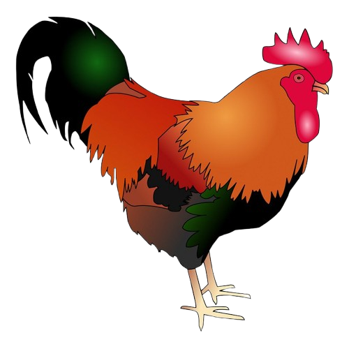
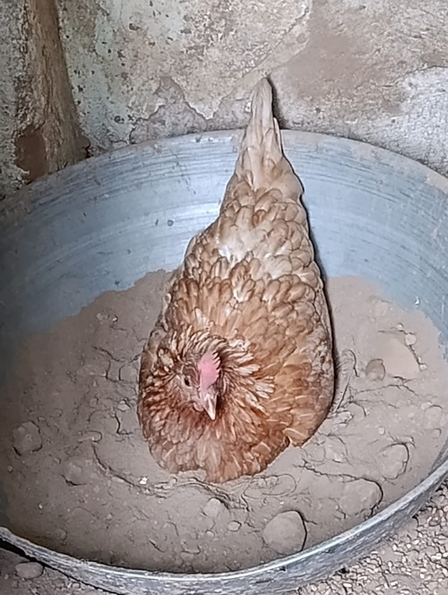
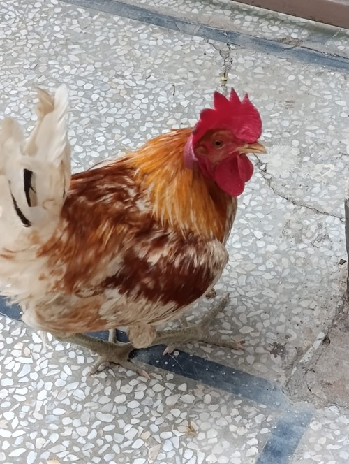
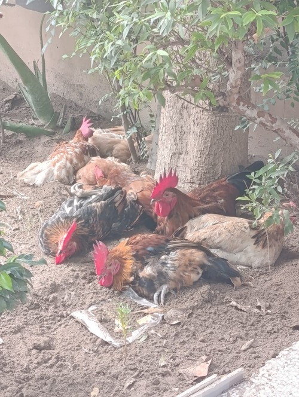
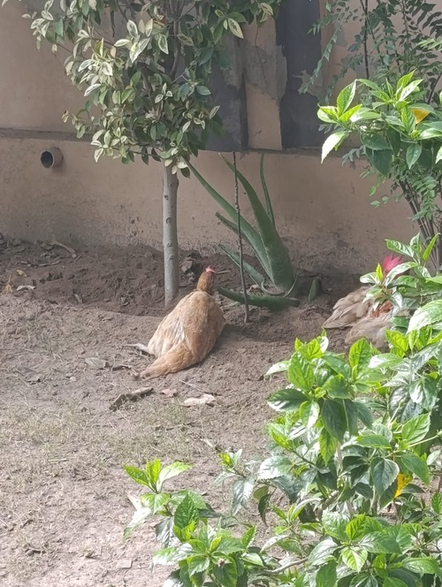
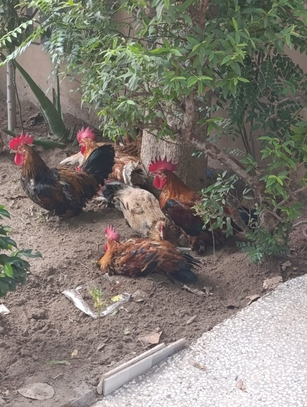
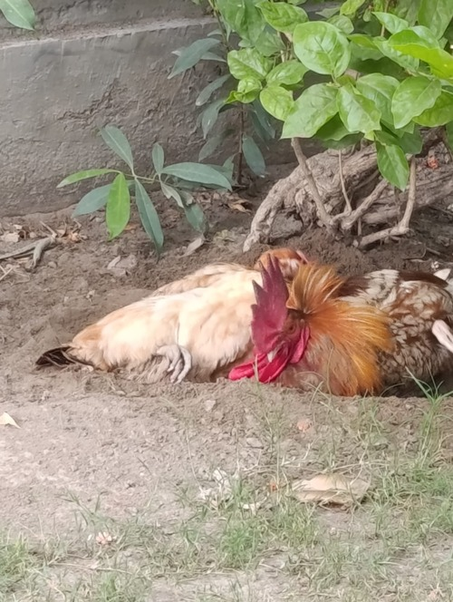
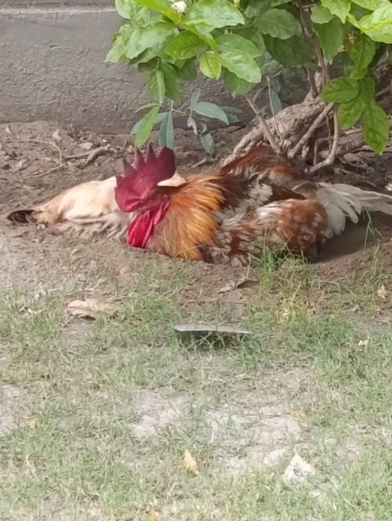
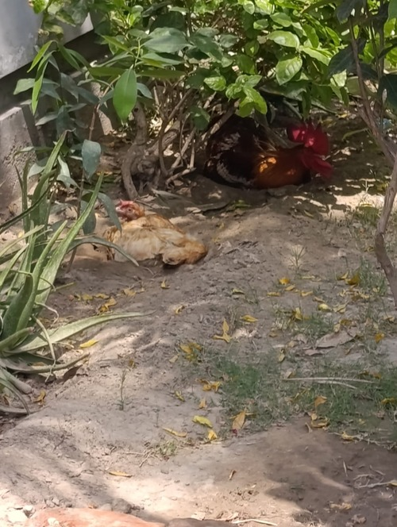

Chickens
The cutest pets
I am really fond of chickens. I have hatched and taken care of many chickens since childhood.
Here are some facts about chickens:
- Chickens can recognize and remember over 100 different faces of people and other chickens.
- They have full-color vision, and their eyes can see ultraviolet light and iridescent hues, meaning their world is more colorful than a human's.
- They understand that an object still exists even when it is hidden from view.
- Chickens form complex social hierarchies called "pecking orders" where each individual knows its place in the group.

Chicken Gallery







